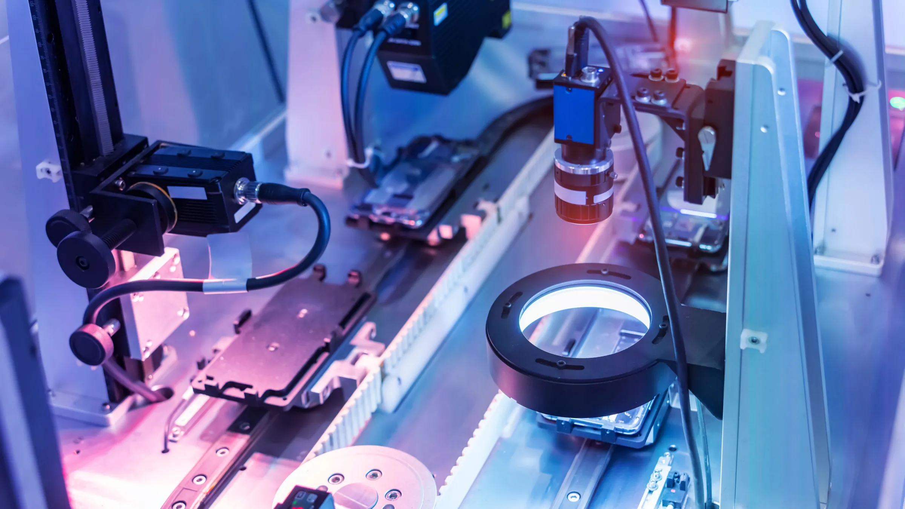

As the digitalization of manufacturing continues, automated inspection is becoming increasingly popular. Automated inspection is the use of digital or computer-aided inspection, measurement and analysis of components. The automation can be: the manipulation of the object, the collection of measurements, or the analysis post-inspection to assess the component against a specification.
Many sectors are rapidly adopting automated inspection. Industry-leading companies are making automated inspections the bedrock of their quality systems, increasing standards of conformance, precision and efficiency.
In the big data-driven corporate world, Eminenture has been assisting hundreds of global customers with data analytics services. Our knowledge consultants and experienced analysts understand how to harness data to gain valuable insights. These very insights contribute to making informed decisions and enhancing competitiveness. With our team of certified analysts, we always leverage data-driven analytics to deliver value plus transformation. This effort proves to be a game-changer, whose results reflect in revenue, productivity, and business intelligence for our customers in 18+ countries from 15+ industries.
Comprehensive data analytics and reporting tools to monitor quality metrics and trends.
Real-Time Monitoring in automated quality control leverages cutting-edge technology to continuously oversee production processes, ensuring that quality standards are consistently met. By utilizing advanced sensors and data acquisition systems, it provides immediate feedback on various production parameters, such as temperature, pressure, and dimensions. This instant monitoring allows for the rapid detection and correction of any deviations from quality specifications, thereby minimizing waste and reducing the likelihood of defects. Real-Time Monitoring not only enhances product quality but also increases efficiency and productivity by allowing for prompt adjustments and maintenance, ultimately leading to smoother operations and higher customer satisfaction.
Continuous monitoring of production processes to ensure consistent quality control.
Predictive Maintenance in automated quality control employs advanced data analytics and machine learning algorithms to forecast equipment failures and optimize maintenance schedules. By continuously monitoring the condition of machinery through sensors and IoT devices, it can detect early signs of wear and tear, vibration anomalies, or other indicators of potential issues. This proactive approach allows for timely intervention before failures occur, reducing unplanned downtime and maintenance costs. Predictive Maintenance not only enhances the reliability and longevity of equipment but also ensures consistent product quality by maintaining optimal operational conditions. This service ultimately leads to increased efficiency, reduced operational disruptions, and significant cost savings.
Predictive analytics to anticipate equipment failures and schedule maintenance proactively.
Custom Solutions in automated quality control are designed to address the unique challenges and requirements of each business, providing tailored approaches that ensure optimal performance and quality assurance. By collaborating closely with clients, we develop specialized solutions that integrate seamlessly with existing systems and processes. This personalized service can include bespoke software development, customized hardware configurations, and specialized data analytics tailored to specific industry needs. Our Custom Solutions not only enhance the precision and efficiency of quality control measures but also provide a competitive edge by aligning with the specific goals and operational constraints of each client. Through this tailored approach, businesses can achieve higher levels of quality, efficiency, and overall operational excellence.
Tailored quality control solutions to meet the specific needs of your business.